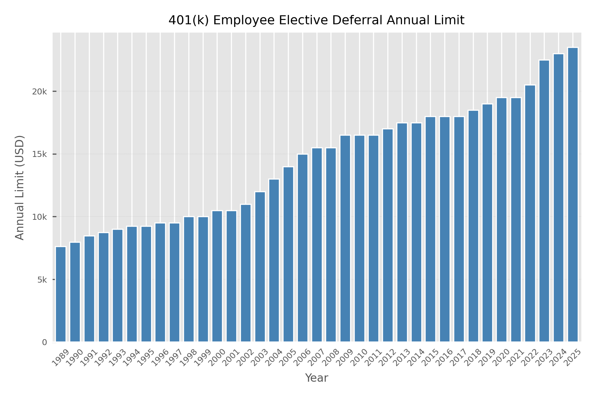
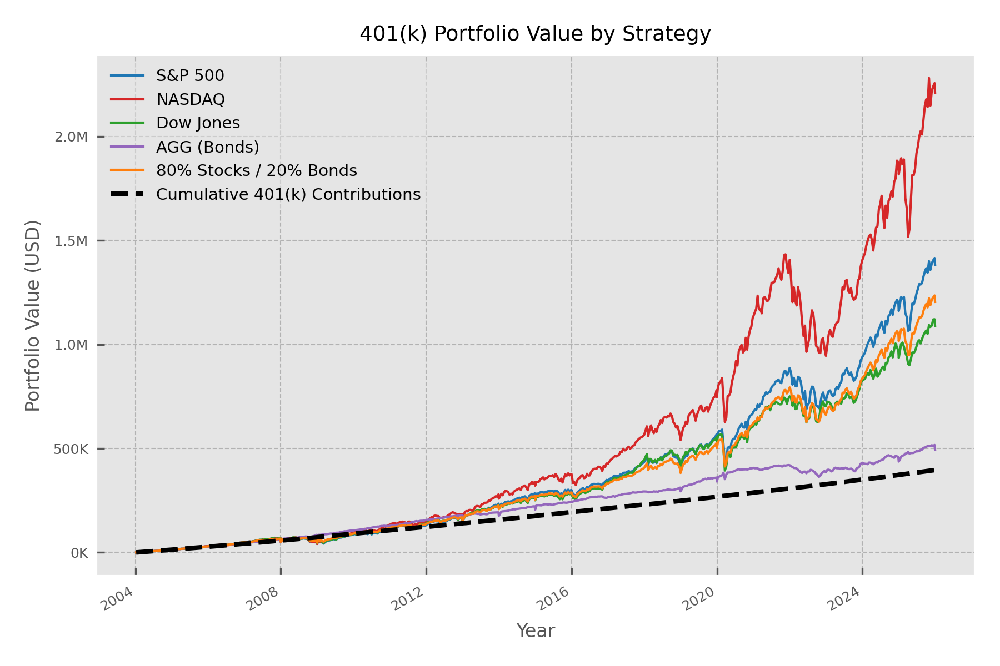
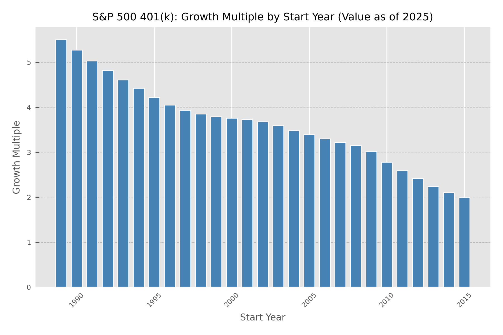

What If You Had Maxed Your 401(k) Every Year?
Suppose you contributed the IRS maximum to your 401(k) every year and invested it in a few simple strategies. How much would you have by 2025, and how much does your start year matter? I ran the numbers using historical limits, biweekly contributions, and adjusted prices.
How the backtest works
Each year we contribute the full employee elective deferral limit, split into 26 biweekly payments. On each payday we “buy” at that day’s open price (adjusted for splits/dividends). We use the actual IRS limits by year and real price data.
- Data: S&P 500, NASDAQ, Dow, and iShares Aggregate Bond ETF (AGG).
- Assumptions: No fees, taxes, or inflation are included.
- Exclusions: These calculations exclude employer matching and "catch-up" contributions for those age 50+.
- Period: The common comparison period starts in 2004 (when AGG data begins) and runs through end of 2025.
401(k) contribution limits over time
The amount you can contribute to a 401(k) each year from your paycheck—the employee elective deferral limit—is set by the IRS and applies per person, per year. The limit is adjusted periodically for inflation, so it has crept up over time: from about $7,600 in 1989 to $23,500 in 2025. That’s more than a tripling in nominal terms over the period. The chart below shows the limit for every year so you can see how the “max” we use in the backtest has changed.

Portfolio value by strategy
Below is the growth of a 401(k) that maxed contributions every year starting in 2004. Each solid line is a different strategy: 100% S&P 500, 100% NASDAQ, 100% Dow Jones, 100% bonds (AGG), or an 80% stocks / 20% bonds mix. The dashed line is Cumulative Contributions—the total cash you put in, with no investment return. Anything above that line is the effect of market growth. Comparing the lines shows how much the choice of investment (and the period 2004–2025) changed the outcome.

The table below summarizes where each strategy landed by 2025. Total contributions over the period are 0.40 M USD—the same for every row, since we assumed max contributions in each case. Final value (in millions) shows how much that cash became in each strategy; the growth multiple is final value divided by contributions (e.g. 3.5× means you ended with 3.5 times what you put in). Use the 0.40 M USD as the baseline: any multiple above 1× means investment returns added value on top of your contributions.
| Strategy | Final Value (M USD) | Growth Multiple |
|---|---|---|
| NASDAQ | $2.21 | 5.56x |
| S&P 500 | $1.38 | 3.48x |
| 80% Stocks + 20% Bonds | $1.20 | 3.03x |
| Dow Jones | $1.09 | 2.74x |
| AGG (Bonds) | $0.49 | 1.24x |
Does start year matter?
When you start does affect your result. We measured that using the Growth Multiple (final value ÷ total contributed). The chart below shows the growth multiple for each start year over fixed 25-year contribution periods.
The takeaway: if you stay invested long enough, even bad timing still pays off. The unluckiest cohort—those whose 25-year window ended right in the 2008–2009 financial crisis—still achieved a growth multiple of about 2×. That means they doubled their contributions despite finishing at a market bottom. Time in the market, not timing the market, is what shows up in the data (I will post a follow-up on this soon).

The Bottom Line
Maxing your 401(k) is a powerful wealth-building tool, but the strategy you choose and the time you give it are the ultimate multipliers.